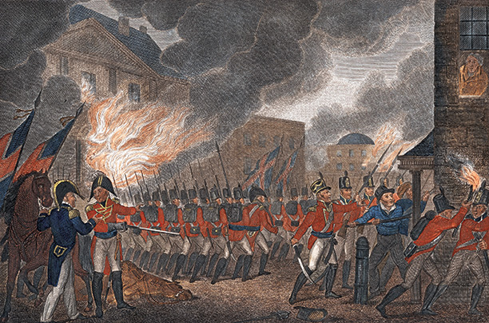
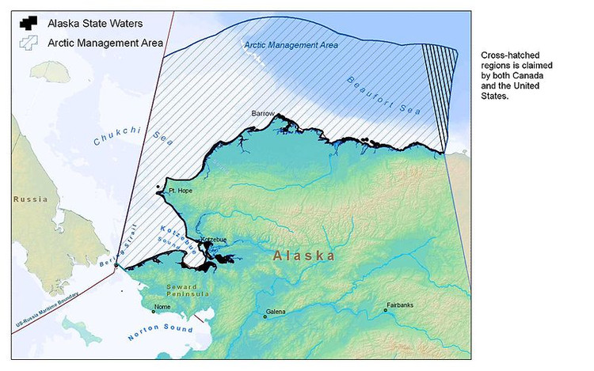
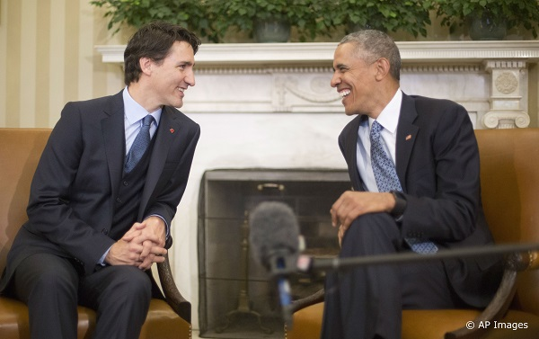
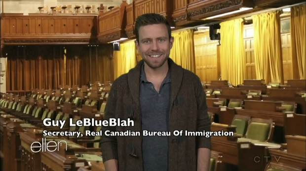
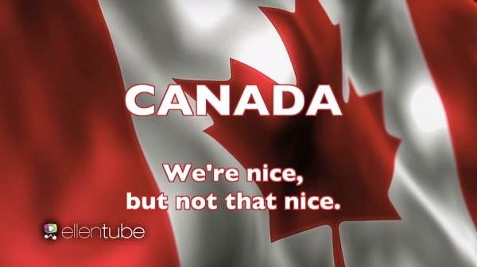

Why you need Chinese composing?
Generally we are all associated with composing for the duration of our lives, regardless of whether it is a conventional note, individual contemplations, striking occasions, overpowering sentiments written in journals or school assignments. A few people are found of making magnificent or diverting stories when an incredible thought goes to their psyches. The individuals who are engaged with experimental writing frequently are detainees of a circumstance, as there is nothing else to do purchase begin fitting an article or researcher paper regardless of whether there is zero motivation to make something. All scholars confront a temporarily uncooperative mind at one point of time, however there is no compelling reason to freeze, as these things are overwhelmed with assistance of specific methods created to help creators in their battle.
No matter what people are thinking or feeling about China, China is a realistic existing in this world, its over 1 billion population, its huge market, and its long history and profound cultural heritage. For whatever the reasons you want to appeal to this segment, you need some kind of content in Chinese to deliver your ideas to them. And, the thing is, we all know, you not only need someone whose monther tongue is Chinese, but also this guy's literature is much better than average person. Therefore, I would like to post some of my work here FYI.
爱恨情仇——美加那点事儿
特鲁多刚上任就接受了BBC的专访。当Evan Davis问他是否会带着加拿大13个省区成为美国的另一半时，他说不！但如果美国的50个州愿意成为加拿大的省份的话，那我们或许可以谈谈。世界级的“怨偶”有很多对，今天我们八一八美加间的爱恨情仇吧。
英法就像一对见不得又离不开的老夫妻一样已争斗了快一千年了，从言语奚落到拳打脚踢再到真刀真枪，从欧洲斗到非洲，从亚洲再斗到北美，他俩绝对是这世上最顶级的怨偶。中日就不用说了，据说单在横店一地就已经消灭了不下10亿的鬼子，日本早已灭绝不下五趟了。然后就是印巴多年的打打杀杀，至于俄罗斯与其所有邻国那就更闹得更不必提了。
但并不是所有的国家、民族间的关系都是仇恨和痛苦的。有些国家之间的关系则更像是家族内部的矛盾，例如匈牙利和奥地利，以及匈牙利与前普鲁士。瑞士在列支敦士登危难之际伸出援手，从而保全了他的这个日耳曼亲戚，而列支敦士登也口口声声自称“小妹”，管瑞士叫“大哥”，你知道的，就是那种“大哥”（而已）。历史上南部意大利更像一个心胸狭窄、嫉妒心爆棚的爱管闲事的老族长，动不动就对北方的小兄弟指手画脚，绝对属于烦死人不偿命的那种。
说回美国与加拿大。据说上图蓝眼睛搭着胳膊的代表美国，而那个淡紫色眼睛的被搭着肩膀的少年代表加拿大。他们彼此之间以北美兄弟互称（虽然也是北美三国之一，墨西哥就永远也别指望混进这个圈子）。美国人没有辜负人们对他的刻板印象，吵闹、自大、某种程度上的粗鲁、性格外向、嗜肉如命和自我欲望膨胀。而他的加拿大兄弟则显示出更加克制、被动和安静的性格，冰球场才是加拿大人发泄其狂野劲儿的地方。
这里引入李杰的一段文字：
1775年至1783年的美国独立战争是北美历史、文化的分水岭。独立战争后，原英属北美一分为二：密西西比河以东，新英格兰以南的13个殖民地组成美国，而新英格兰以北的鲁伯特土地、新斯科舍、魁北克和纽芬兰岛则仍然保留其殖民地地位。在整个战争期间和战争结束后的几年里，大约有40,000名保皇党人从美国逃到加拿大。与此同时，相当数量的同情美国革命的加拿大人则跨过边界，进入美国。正如著名的美-加文化比较研究学者Lipset所指出的那样，“美国是革命的产物，而加拿大则是反革命的产物”。两国的价值理念从建国伊始就迥然不同：美国价值观强调“生命、自由和对幸福的追求”，而加拿大的理念则体现为“和平、秩序和良好的政府”。
革命与反革命，这顶帽子是不是太大了点。但无论如何，美加两国文化同源，唇齿相依，既有兄弟阋于墙又有携手御辱于外，这出爱恨情仇的兄弟大戏已经上演了二百多年了，而且还将一直演绎下去。
19世纪两场举世瞩目的纵火案都和英国人有关。其一为1860年的英法联军火烧圆明园，其二就是火烧圆明园的预演——1814年的火烧白宫。1775年的独立战争远未解决美英之间的矛盾，美国这个刚刚摆脱大家长管束，热火朝天地四处扩张的毛头小伙子怎么看那个老谋深算在全世界纵横捭阖的老牌帝国主义都碍眼，一言不和两人又在1812年开打了，不过这次是美国率先宣战的，史称“第二次独立战争”。尽管这次美国是以“维护航海自由”为名发动了这次战争，但真实的目的是占领加拿大，继续扩大自己的版图。
在战争初期，英国忙着跟老冤家法国的拿破仑大打出手，大部分精锐海陆力量都部署在了欧洲。战争开始时英国在加拿大的正规军只有5000人，其余主要靠加拿大民兵。仗打到1814年的5月，美军在伊利湖北部沿岸一带进行毁灭性的烧杀抢掠，其中最臭名昭著的就是“多佛港暴行”。为此加拿大总督写信给英军总指挥亚历山大·考克伦将军，希望对美国进行报复。而是年刚刚从欧洲战场腾出手来的英国总算有余力狠狠教训一下美国人了。
8月19日，在指挥官罗伯特·罗斯的率领下，2500名英军在马里兰沿岸登陆并长驱直入杀进华盛顿。英军最先火烧了国会山，接着沿宾夕法尼亚大道直奔总统府。8月24日当晚，英军火烧了总统官邸，熊熊燃烧的大火即便远在巴尔地摩都能看得清楚。
战争进行到1814年底，打得难解难分的双方签署了《根特和约》，正式停战，美加恢复了战前的边界。这一仗打出了200多年的和平，也基本确定了两个国家的边境线和相互关系。
为了掩饰火烧过的痕迹，重新修缮的美国总统府外墙漆上被刷上了一层白色的油漆，“白宫”一名因此而沿用至今。
虽然加军没有直接放火烧白宫，但说起这段古来，加拿大人还是由不住地自豪不已，我们先前——比你阔的多啦！
领土争端
展开世界地图，凡齐齐整整划国界线的地方，大抵曾做过欧洲列强的殖民地。殖民者在地图上画杠杠分猪肉，全然不顾山川河流是怎么分布走向的。非洲如是，北美亦如是。但仅凭在地图上按经纬度画杠杠并不能完全解决问题。美加从南到北，从东到西共有六个区域存在领土纠纷。
1．Beaufort Sea（阿拉斯加/育空）
2．Dixon Entrance（阿拉斯加/不列颠哥伦比亚）
3．Machias Seal Island（缅因/新不伦瑞克）
4．North Rock（缅因/新不伦瑞克）
5．Strait of Juan de Fuca（华盛顿州/不列颠哥伦比亚）
6．Northwest Passage （西北航道）： 美国宣称为国际水域，希望得到通航权
两国最新的领土纠纷事端发生在阿拉斯加/育空的波弗特海争议区域。
美国海洋能源管理办公室最近公布了一项提议，开放对阿拉斯加沿岸的波弗特海和恰克奇海的租借，以便于勘探该海域的石油和天然气。然而，阿拉斯加沿岸的波弗特海却是加拿大和美国有主权纠纷的海域。因此，美国方面的举动引起了加拿大的警觉。人们认为，美国此举有可能再次点燃美加之间长期存在的边界纠纷。
（争议地区为上图右上角的交叉线扇形阴影区。加拿大认为，波弗特海的两国边界应该是阿拉斯加州和育空地区北坡之间陆地边界的自然延伸，而美国方面认为，波弗特海边界应该是陆地边界的北端点直接90度直角延长线，其结果就是一块有主权争议的2.1万平方公里楔形海域，差不多一个安大略湖的面积。）
领袖义气
美国的比较社会学家利普塞特（Seymour Martin Lipset）曾经评论说：美国文化深受古典自由主义，辉格思想和民粹主义的影响，以个人主义价值观为导向，具有变动不居的特点。加拿大文化则扎根于托利主义的土壤，深受重商主义的影响，注重群体价值，尊重权威，较为静态化。加拿大可以说是具有强烈社会主义色彩的君主制国家。
文化与价值观的差异在政治家身上程度不同的体现左右了美加两国关系的走向。渥太华与华盛顿的关系与两国定期的大选结果极度正相关。冷与热取决于当选的两国领导人看对方顺眼与否。
例如上世纪30年代，两国领导人谁也看不上谁，时任总理贝内特访问美国时，曾想方设法避开摄影师，不愿与胡佛总统合照。
然而麦肯齐·金上台后与罗斯福总统突然由紧张转向和谐与合作，长时间给加拿大带来至关重要的利益。
约翰·迪芬贝克总理与约翰·肯尼迪总统经过一段长时间不太友善的关系后，新当选的莱斯特·皮尔逊总理在海恩尼斯港会见肯尼迪，把逆势关系扭转过来。
而“小土豆”的老爹皮埃尔·“老土豆”任加拿大总理的时候，遇上的是美国保守的里根总统，两人在很多方面，尤其是在意识形态和风格上都非常不咬弦，里根经常嘲笑他的反战倾向，结果，加美双边关系搞得十分糟糕。
但当保守党上台后，马尔罗尼和里根热络得不行不行的，情投意合的两人竟然在1985年“三叶草峰会”（Shamrock summit）时深情款款地高歌一曲“当爱尔兰眼睛都在笑着时”，然后，然后两保守政客主导了大陆贸易协议。
再后来克雷蒂安不甩小布什入侵伊拉克的谎言，拒绝合作，然后就是就是哈珀与奥巴马因意识形态与风格的不同而导致的两国关系长期冷淡。
最新的情况是小土豆和奥巴马在很多方面都持相同或相近的理念，所以三月末的国事访问让美加结束了13年之久的冷淡关系。
奥巴马在白宫热情地款待了帅锅夫妇，两人眉来眼去，笑逐颜开，情投意合，整个一对好基友的景象。
可惜奥氏只有不到一年的任期，而且还是一个跛脚鸭，能顺利撞钟到年底交棒就阿弥陀佛了，指望不上他能为加拿大做什么大贡献。
好消息是看起来床破选胜的可能性还在降低中，那样的话我们可以指望另外一个美加外交关系的春天了。
相互挤兑
根据盖洛普公司于2012年公布的民意调查，加拿大一直是美国人最喜爱的国家，有96%的美国人喜欢加拿大。BBC于2014年公布的民意调查，86%的美国人一直关注加拿大的正面影响，只有5%的美国人一直关注加拿大的负面影响。而加拿大人一直关注美国的正面影响只有43％，关注美国的负面影响则达到52％。纵然你虐我千百遍，我待你依旧如初恋。
两国政客你来我往唇枪舌剑，两国人民也一点也都不闲着，例如这个：
说火车车厢里有一个加拿大人，一个美国人，一个金发美女和一个超级丑陋的胖女人。当列车穿过一条黑暗的隧道时，车厢里响起了一记清脆的耳光声。出了隧道后，美国人的脸颊上有一个红色的大巴掌印记。
金发美女想： “一定是这狗娘养的美国佬想揩老娘的油，结果摸错了人，给这个胖女人扇了个大耳光。”
胖女人想： “一定是这个肮脏的扬基想吃对面美女的豆腐，结果给胖揍了一巴掌。”
美国人想：“肯定是这他妈的加拿大佬对美女动手动脚，结果她错打了我。”
加拿大人想：“我希望尽快能进另一条隧道，这样我可以再扇这个讨厌的美国佬一巴掌”。
美国人是这么挖苦加拿大人的口音的：
说当年加拿大的立国之父麦克唐纳和他的小伙伴们很头疼用什么名字来给这片伟大的土地做国名，有人出了个好主意。让我们把26个字母放进帽子里，然后随便挑三个，被挑中的字母组成的单词就是国名。于是他们这么做了，第一个字母挑出来了，那家伙喊道：C， eh?! 接着第二字母，N， eh?! 然后第三个字母D， eh?!（eh发音类似拼音的[ei]，以前不少加拿大人说话喜欢带这个音，而美国人认为这很老土。）
还有Q & A：
问：如果你踩了加拿大人的脚，他们会说什么？
答：对不起。
移民加拿大
据说每到美国总统大选年，那些对候选人或当选者心怀不满的美国人就会掀起一股要向加拿大移民的“撒娇”热潮。而2016年因为共和党富豪候选人川普的选情看涨，加拿大又成了美国人的心里“逃难地”。宝宝受了委屈，宝宝不说，宝宝要去加拿大。
3月2日，美国党内提名“超级星期二”，川普一举拿下了马萨诸塞、佛吉尼亚、田纳西州之后，谷歌搜索中“如何移民加拿大”成了美国人的大热，最高峰时，比平时高出了1，150%。当天深夜，加拿大移民部的网站出现瘫痪，有人估计是因为网站访问量过多造成的。
美国的著名节目“艾伦秀”也拿这事儿调侃了一番。节目中扮作加拿大“真正移民局”秘书的年轻人对这些想移民到加拿大的美国人说：不，TM给劳资死远点儿！我们加拿大人是nice，但没nice到那个份儿上。
而真实的情况是，加拿大新斯科舍省布雷顿角的一位电台主持人罗尼·卡拉布雷斯（Ron Calabrese）创立了一个网站，就叫做“如果川普赢了，布雷顿角欢迎你，Cape Breton If Trump Wins”，乘势大大地推广了一把他的家乡。而新斯科舍省的移民部长迪亚贝（Lena Diab）则表示，如果有人开口，他们会全力帮忙。看起来美国才是加拿大最受欢迎的移民来源国哦。
结语
和美国波澜壮阔的近现代历史不同，学者们说加拿大没有多少值得铭记的历史，从未打过革命战争或真正的内战（如果短暂的魁独武装暴动不算的话），从未倡导过伟大的社会和政治运动，从未产生过杰出的世界领袖，也从未犯下过令人难忘的暴行。加拿大没有华盛顿、杰斐逊、林肯式的伟大人物，没有奇克莫加—查塔努加战役那样的大战，也没有葛提斯堡演说那样的重要文献。
然而加拿大有世界上第二大的国土面积，第二大的原油储备，是世界上第三大的天然气生产国，第三大水利发电国，而淡水资源更是独占鳌头，占全球的20%。
但幸与不幸，加拿大的南面是一强独大的美国，美加有全世界最长的不设防边界，更关键的是，加拿大只有美国的十分之一的人口。加拿大自立国之日起，就一直笼罩在美国的阴影之下，加拿大并入美国或美国终究会吞并加拿大的幽灵从来都没有停止过在两国间的徘徊。当美国索要和氏璧时，谁将是加拿大的蔺相如？就算有一个蔺相如，又如何？
还有，从美加的关系可以看出英王室运祚仍长，远未到寿终正寝之时。原因很简单，只要有类似美国这样的超强大国存在，英联邦就不会解体，大家还有抱团取暖的需求。而民选的英联邦成员国政府不可能向民选的英国政府效忠，他们的效忠的对象只能是英国国王。所以，二百多年前美国的独立战争，反而冥冥之中让英国王室拥有了绝大的继续存在下去的理由。而加拿大上议院的种种话题，也就是说说而已，在看得见的将来不可能有什么实质性的变化。